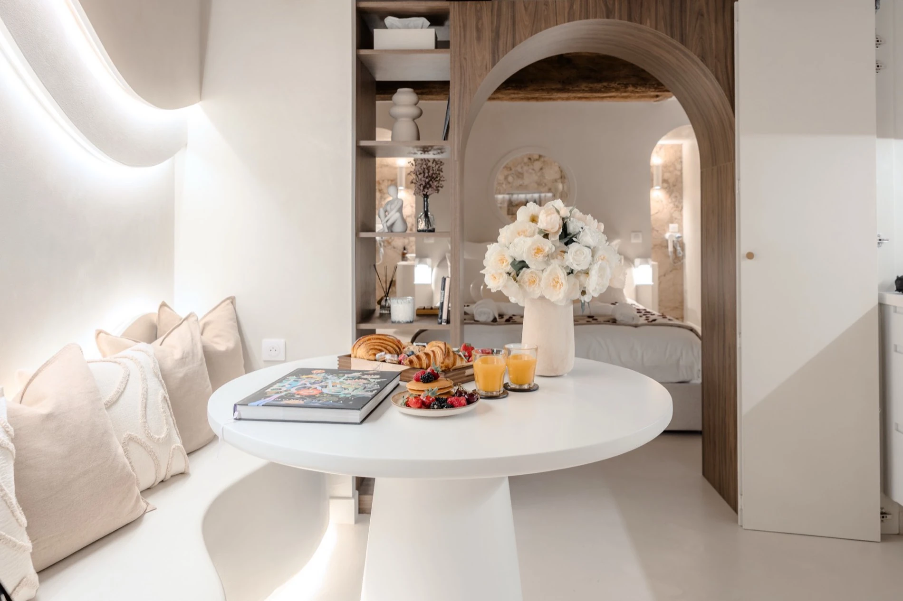

Deux jours posés,
cinq jours pour vous deux.
En 2026, le 11 novembre tombe un mercredi. De quoi transformer un jour férié isolé en un vrai pont — et une escapade à deux, sans attendre les vacances de fin d'année.

Un mercredi férié divise souvent les avis : trop court pour un vrai week-end, trop isolé pour s'organiser. Sauf qu'avec deux jours de congé bien placés, le 11 novembre 2026 devient l'occasion d'un vrai pont — cinq jours de repos, sans avoir à poser toute une semaine.
Le 11 novembre, un mercredi qui change la donne
Un jour férié en milieu de semaine ouvre deux options pour faire le pont. En posant le lundi 9 et le mardi 10 novembre, on profite d'un repos du samedi 7 au mercredi 11 inclus. En posant plutôt le jeudi 12 et le vendredi 13, le repos s'étend du mercredi 11 au dimanche 15. Dans les deux cas : deux jours posés pour cinq jours de repos.
Une parenthèse, pas une expédition
Contrairement aux vacances de la Toussaint ou aux fêtes de fin d'année, ce pont ne réclame pas de grande organisation. Pas besoin de réserver des semaines à l'avance ni de caler un long séjour : une nuit ou deux suffisent pour sortir du rythme habituel, se retrouver sous la voûte de pierre, et laisser le bain à remous faire le reste.
Un détail à vérifier avant de poser ses congés
Le 11 novembre est un jour férié légal, mais il n'est pas automatiquement chômé pour tout le monde : cela dépend de l'accord collectif de l'entreprise ou, à défaut, de l'employeur. Avant de caler une date, mieux vaut vérifier son propre calendrier professionnel.
Pourquoi réserver dès maintenant
Contrairement à un pont de printemps, celui-ci arrive après les vacances de la Toussaint et juste avant les premières envies de fêtes de fin d'année : une fenêtre plus confidentielle, où les disponibilités en milieu de semaine restent généralement plus simples à trouver — à condition de ne pas s'y prendre à la dernière minute pour les soirs de week-end.
Ce qui est inclus
- Un logement entier pour deux personnes, pas une chambre partagée
- Un spa balnéo privatif, sous une voûte de pierre ancienne
- Une douche sensorielle et une pièce secrète
- Villefranche-sur-Saône, à 40 minutes de Lyon
Notre positionnement
La Voûte des Sens se réserve directement en ligne, aux mêmes conditions que n'importe quelle autre nuit de l'année. Voir les disponibilités.
Questions fréquentes
Le 11 novembre 2026 tombe-t-il un jour favorable pour faire le pont ?
Oui. Le 11 novembre 2026 tombe un mercredi. En posant deux jours de congé, soit le lundi 9 et le mardi 10, soit le jeudi 12 et le vendredi 13, on obtient cinq jours de repos d'affilée.
Le 11 novembre est-il chômé pour tout le monde ?
Le 11 novembre est un jour férié légal, mais il n'est pas automatiquement chômé pour tous les salariés : cela dépend de l'accord collectif de l'entreprise ou, à défaut, de l'employeur. Mieux vaut vérifier son propre calendrier avant de caler une réservation.
Pourquoi réserver une nuit en spa privatif pour ce pont ?
C'est une fenêtre courte, idéale pour une parenthèse à deux sans organiser un long voyage : à 40 minutes de Lyon, la suite se réserve pour une ou deux nuits, sans contrainte de minimum de séjour imposée par la période.

La Voûte des Sens
Une voûte de pierre,
deux personnes.
Balnéo privative, douche sensorielle et pièce secrète, à Villefranche-sur-Saône, à 40 minutes de Lyon. 5,0/5 sur 20 commentaires.